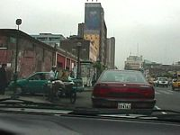
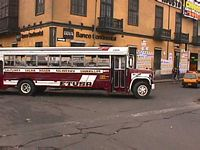
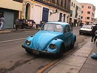
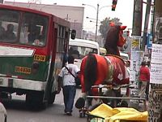
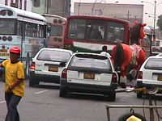
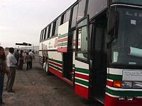

DOCTYPE html>
DOCTYPE html>

DOCTYPE html>
DOCTYPE html> DOCTYPE html>
DOCTYPE html> DOCTYPE html>
DOCTYPE html>
DOCTYPE html>
12 Janvier : Le d�part
DOCTYPE html> L'avion descend dans la pur�e de pois, on ne perce la couche de nuages qu'� quelques centaines de m�tres du sol.DOCTYPE html> Heure locale : 19h. En entrant dans l'a�roport, il fait encore jour. Le temps d'effectuer les formalit�s et de r�cup�rer le sac, il fait nuit.
DOCTYPE html> Imm�diatement � la sortie de la zone de d�barquement, je suis alpagu� par l'office du tourisme, qui me choisit un h�tel (cher) ainsi qu'un bus (cher) pour y aller.
DOCTYPE html> De toutes fa�ons, l'a�roport est blind� de monde et j'abandonne mon plan initial carte de t�l�phone + palabre en espagnol pour d�gotter la meilleure affaire de Lima, en faveur de la solution "packag�e" de l'office du tourisme. Demain.
DOCTYPE html> Apr�s avoir pay� le bus, je vais attendre le d�part. 5 minutes plus tard, 2 jeunes nanas arrivent. Elles sont fran�aises ( ), sympas (�a, c'est normal, vu les antecedents). Marie et Marie. On est presque seuls dans le bus.
DOCTYPE html> En discutant pendant le voyage, nous d�couvrons que nous ne sommes pas dans le m�me h�tel. On se met d'accord pour leur h�tel.
DOCTYPE html> Le bus traverse Lima et Miraflores (le quartier chic o� se trouve notre h�tel) par le chemin des �coliers. Le chauffeur du bus passe un coup de fil quand il apprend que les plans ont chang�. Mais tout est OK. Il n'aura pas � me tra�ner de force dans l'h�tel pr�vu au d�part.
DOCTYPE html> En guise d'h�tel, c'est une chambre d�h�tes avec 4 ou 5 chambres, mais nous sommes les seuls clients avec 2 chambres. C'est propre, il y a une salle de bains pour chaque chambre (attention, pas DANS chaque chambre), et il y a une grande terrasse avec vue sur Miraflores.
DOCTYPE html> Les filles m'y rejoignent pour le briefing du lendemain. Le plan : aller � l'A.J. conseill�e simultan�ment par le Routard et le L.P.
DOCTYPE html> Apr�s avoir pris de l'argent et �chang� les travellers-ch�ques, on trouve un taxi qui accepte de nous amener � la Plaza Major pour 5 Soles. Le trajet est impressionnant. On prend une sorte de p�riph�rique de Miraflores � Central Lima. Enseignes partout, immeubles modernes, immense stade de foot. Les grands b�timents (neufs et historiques) sont r�serv�s aux banques et � l'administration. Ils sont gard�s par la police, l'arm�e et toutes sortes de milices priv�es.
DOCTYPE html> Mais aussi voitures de toutes les �poques, de 1950 � nos jours, et dans toutes les conditions possibles et imaginables. On voit beaucoup de bus type �coles am�ricaines. Le trafic s��paissit � mesure qu�on approche du centre (et c�est la qu�on va, comme par hasard).
DOCTYPE html> Arriv�es � la Plaza Major (anciennement Plaza de Armas), le taxi ne peut pas aller plus loin : il y a une manifestation. On finit � pied jusqu�� l�auberge, � quelques "quadras" de l�. L�air est pollu� et le ciel est gris (je suppose que c�est li�).
DOCTYPE html> L'A.J. est g�niale, la d�coration n'a aucun style en particulier, mais les statues � tous les �tages, les plafonds � 4m, les lianes qui pendent autour de la cafet' et l'ambiance "fin de travaux" en font un endroit charmant (bon, je sais j'ai des go�ts bizarres). Pour 3 dollars, on � un lit dans une chambre-dortoir de 8. Dans la chambre, un hollandais joue de la gratte, Marie (la brune) la lui emprunte et joue un peu (ses propres compositions, svp famille de musiciens, papa joue dans un groupe de punk-rock, ceci explique cela.
DOCTYPE html> Une ballade dans Lima s'impose, on se prom�ne autour de La Plaza Major, puis un bon jus de fruits (en fait assez �c�urant, les fruits �taient plus que murs). Retour � l'auberge, direction la cafet'. Je prends une bi�re (il n'y a que des grandes bouteilles, zut alors deux d'entre eux viennent de passer 15 jours en jungle, et le couple vient d�Am�rique Centrale. Bonne tchatche, puis on joue au tarot. Je suis le cinqui�me, je ne peux pas me d�filer. Je me retire apr�s deux heures d'un suspense insoutenable, bon dernier (donc grand seigneur, on se console comme on peut).
DOCTYPE html> Le soir, vers 9h30, re-ballade avec Marie (la rousse), qui fait des �tudes d'infirmi�re et veut faire de l'humanitaire. Bref, je suis bien accompagn�.
DOCTYPE html> Dans le centre-ville, tout est ouvert, il y a des flics partout, de toutes les couleurs, noirs, marrons, verts, bleu marine, avec et sans matraque, avec et sans chiens, on dirait un d�fil� de mode. Vers 10h, les boutiques commencent � fermer.DOCTYPE html>
13 janvier
DOCTYPE html> D�part midi, direction le quartier des compagnies d'autocars, en taxi. On a d�cid� d'aller � Pisco. On se d�cide pour la compagnie Ormeno (12 Soles). Le bus est r�serv� pour le lendemain 14h, classe �conomique.DOCTYPE html>
DOCTYPE html>
DOCTYPE html>